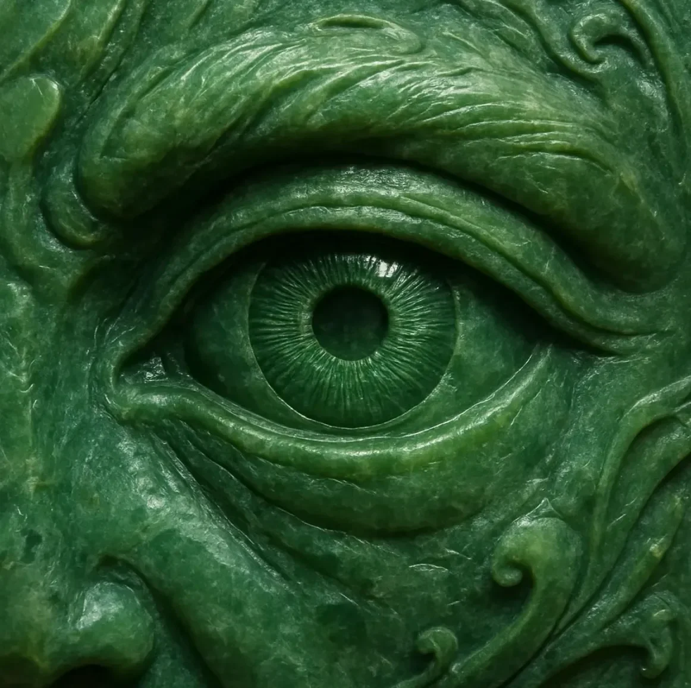

메이 첸 박사는 이 특이한 광산 샘플이 또 다른 헛된 희망일 뿐, 인류의 기도에 대한 답이 아닐 거라고 예상했다. 하지만 어둑한 실험실에서 현미경을 조정하자, 녹색 덩어리가 맥동하며 펼쳐졌다.
[Dr. Mei Chen had expected the unusual mine sample to be another false hope, not the answer to humanity’s prayers. But as she adjusted her microscope in the dimly lit lab, the green mass pulsed and unfurled.]
그 녹색 눈이 한 번 깜빡였고, 수직 막이 지구에서 진화한 어떤 것과도 다르게 옆으로 미끄러졌다. 그녀의 샘플링 장비가 무감각해진 손가락에서 미끄러져 실험실 바닥에 부딪혔다.
[The green eye blinked once, vertical membrane sliding sideways like nothing evolved on Earth. Her sampling equipment slipped from numbed fingers to clatter against the lab floor.]
당신들이 우리가 죽어가는 것을 지켜보고 있었군요.
[You’ve been watching us die.]
그 말이 그녀의 마음속에 직접 형성되었다. 메이는 뒤로 비틀거리며 의자를 넘어뜨렸다. “환각을 보고 있는 거야,” 그녀는 손바닥을 관자놀이에 대고 속삭였다.
[The words formed directly in her mind. Mei stumbled backward, knocking over a stool. “I’m hallucinating,” she whispered, pressing her palms against her temples.]
아니에요. 그 생물의 비취색 피부가 각 정신적 음절마다 물결쳤다. 그들이 단순히 특이한 곰팡이 성장이라고 생각했던 것이 식물과 동물 모두의 특성을 가진, 명백히 지각 있는 무언가로 변형되었다.
[You are not. The creature’s jade-textured skin rippled with each mental syllable. What they’d thought was merely an unusual fungal growth had transformed into something both plant and animal, something unmistakably sentient.]
“당신은 뭐죠?” 그녀는 원시적인 공포와 싸우는 과학적 훈련을 바탕으로 간신히 말했다.
[“What are you?” she managed, her scientific training wrestling with primal fear.]
“마지막 존재죠. 우리는 한때 많았어요, 별들 사이를 여행하며 생명이 없는 곳에 생명을 가져다주었죠.” 그것의 단 하나뿐인 눈, 프랙탈 무늬가 안쪽으로 소용돌이치는 완벽한 에메랄드색 홍채는 태고의 인내심으로 그녀를 응시했다. “수세기 전에 나를 이곳에 데려온 충돌로 내 재생 시스템이 손상되었어요.”
[“The last. We were many once, traveling between stars, bringing life where there was none.” Its single eye—a perfect emerald iris with fractal patterns spiraling inward—fixed on her with ancient patience. “The crash that brought me here centuries ago damaged my regenerative systems.”]
“충돌이요?” 그 의미가 그녀를 충격에 빠뜨렸다. “당신은 외계인이군요.”
[“Crash?” The implication stunned her. “You’re extraterrestrial.”]
“372개의 세계,” 그것이 계속했다. “372개의 불모지를 정원으로 변화시킨 기억이 있어요.” 그 존재의 살점이 물결쳤고, 지속적으로 변화하는 지형도와 같은 패턴을 드러냈다.
[“Three hundred and seventy-two worlds,” it continued. “I have memories of transforming three hundred and seventy-two barren rocks into gardens.” The being’s flesh undulated, revealing patterns like topographical maps that shifted continuously.]
“당신들의 행성이 죽어가고 있어요,” 그것이 단순히 말했다. “세계의 자연적인 죽음이 아니라—조기 사망이죠.”
[“Your planet is dying,” it said simply. “Not the natural death of worlds—a premature one.”]
“알아요.” 그녀의 목소리가 갈라졌다. “기후 전쟁과 복원 프로토콜 이후에도, 충분하지 않아요.”
[“We know.” Her voice cracked. “Even after the Climate Wars and the Restoration Protocols, it’s not enough.”]
“나는 수천 년의 지식을 보유하고 있어요,” 테라포머가 말했다. “행성 재생을 마스터한 종족의 집단 지혜죠. 하지만 나는 마지막이고, 내 세포 응집력이 실패하고 있어요.”
[“I possess the knowledge of millennia,” the terraformer said. “The collective wisdom of a species that mastered planetary rebirth. But I am the last, and my cellular cohesion is failing.”]
그것은 반투명한 액체로 빛나는 표면을 가진 촉수를 그녀에게 뻗었다. “내 지식은 당신들의 대기 균형을 회복하고 손상된 생태계를 재생할 수 있어요. 대신, 나는 내 악화되는 형태를 안정화하기 위해 인간 줄기세포가 필요해요—우리 두 유산을 모두 보존하는 새로운 하이브리드 개체를 만드는 거죠.”
[It extended a tendril toward her, its surface glistening with translucent fluid. “My knowledge can restore your atmospheric balance and regenerate your damaged ecosystems. In exchange, I require human stem cells to stabilize my deteriorating form—creating a new hybrid entity that preserves both our legacies.”]
메이는 그 독특하고 고대의 눈, 생명 자체의 색깔을 응시하며 그 거래를 이해했다: 두 종족의 근본적인 변형, 아니면 각자의 멸종.
[Mei stared into that singular, ancient eye—the color of life itself—and understood the bargain: a fundamental transformation of both species, or separate extinctions.]
“그 후에도 우리는 여전히 인간일까요?” 그녀는 속삭였다.
[“Would we still be human afterward?” she whispered.]
그 눈이 다시 깜빡였고, 그 제스처는 어떻게든 외계적이면서도 깊이 친숙했다. “자격은 무관해요. 진화도 무관해요. 생명은 살아남거나 그렇지 않거나. 선택하세요.”
[The eye blinked again, a gesture somehow both alien and deeply familiar. “Deserving is irrelevant. Evolution is irrelevant. Life persists or it doesn’t. Choose.”]